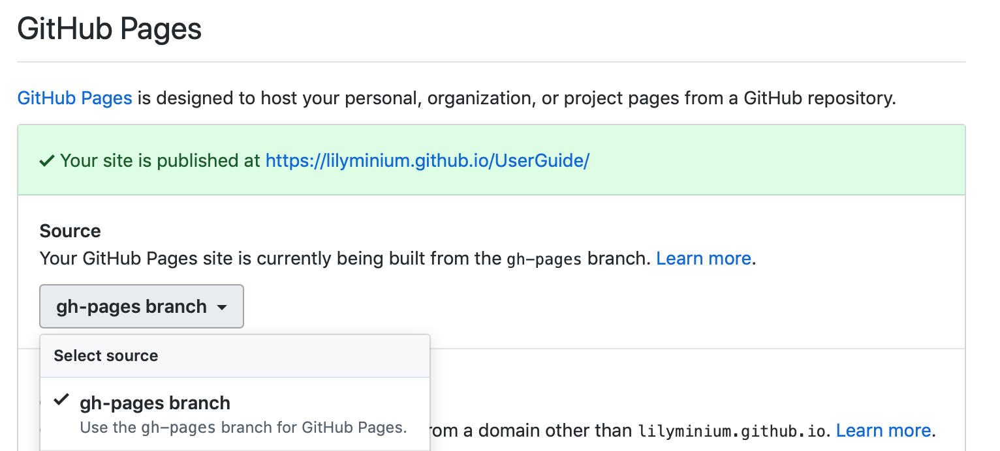

Contributing to the user guide¶
MDAnalysis maintains two kinds of documentation:
This user guide: a map of how MDAnalysis works, combined with tutorial-like overviews of specific topics (such as the analyses)
The documentation generated from the code itself. Largely built from code docstrings, these are meant to provide a clear explanation of the usage of individual classes and functions. They often include technical or historical information such as in which version the function was added, or deprecation notices.
This guide is about how to contribute to the user guide. If you are looking to add to documentation of the main code base, please see Working with the code documentation.
The user guide makes use of a number of Sphinx extensions to ensure that the code examples are always up-to-date. These include nbsphinx and the ipython directive.
The ipython directive lets you put code in the documentation which will be run
during the doc build. For example:
.. ipython:: python x = 2 x**3
will be rendered as:
In [1]: x = 2 In [2]: x**3 Out[2]: 8
Many code examples in the docs are run during the doc build. This approach means that code examples will always be up to date, but it does make the doc building a bit more complex.
Here is an overview of the development workflow for the user guide, as expanded on throughout the rest of the page.
Fork the MDAnalysis repository from the mdanalysis account into your own account
Set up an isolated virtual environment for your documentation
Add your new documentation.
Forking and cloning the User Guide¶
Go to the MDAnalysis project page and hit the Fork button. You will want to clone your fork to your machine:
git clone https://github.com/your-user-name/UserGuide.git cd UserGuide git remote add upstream https://github.com/MDAnalysis/UserGuide
This creates the directory UserGuide and connects your repository to the upstream (main project) MDAnalysis repository.
Creating a development environment¶
Create a new virtual environment for the user guide. Install the required dependencies, and activate the nglview extension. We use nglview for visualizing molecules in Jupyter notebook tutorials.
If using conda:
cd UserGuide/ conda env create python=3.6 -f environment.yml --quiet conda activate mda-user-guide jupyter-nbextension enable nglview --py --sys-prefix
If using pip:
cd UserGuide/ pip install -r requirements.txt jupyter-nbextension enable nglview --py --sys-prefix
Building the user guide¶
Navigate to the doc/ directory and run make html:
cd doc/ make html
The HTML output will be in doc/build/, which you can open in your browser of choice. The homepage is doc/build/index.html.
If rebuilding the documentation becomes tedious after a while, install the sphinx-autobuild extension.
Saving state in Jupyter notebooks¶
One of the neat things about nglview is the ability to interact with molecules via the viewer. This ability can be preserved for the HTML pages generated from Jupyer notebooks by nbsphinx, if you save the notebook widget state after execution.
Adding changes to the UserGuide¶
As with the code, commit and push your code to GitHub. Then create a pull request. The only test run for the User Guide is: that your file compile into HTML documents without errors. As usual, a developer will review your PR and merge the code into the User Guide when it looks good.
It is often difficult to review Jupyter notebooks on GitHub, especially if you embed widgets and images. One way to make it easier on the developers who review your changes is to build the changes on your forked repository and link the relevant sections in your pull request. To do this, create a gh-pages branch and merge your new branch into it.
# the first time
git checkout -b gh-pages
git merge origin/my-new-branch
Fix any merge conflicts that arise. Then edit UserGuide/doc/source/conf.py and change the URL of the site, which is set to site_url = "https://www.mdanalysis.org/UserGuide". Change it to your personal site, e.g.
site_url = "https://www.my_user_name.github.io/UserGuide"
Now you can build your pages with the make github macro in the UserGuide/doc/ directory, which builds the files and copies them to the top level of your directory.
make github
You should be able to open one of these new HTML files (e.g. UserGuide/index.html) in a browser and navigate your new documentation. Check that your changes look right. If they are, push to your gh-pages branch from the UserGuide/ directory.
git add .
git commit -m 'built my-new-branch'
git push -f origin gh-pages
On GitHub, navigate to your fork of the repository and go to Settings. In the GitHub Pages section, select the “gh-pages branch” from the Source dropdown. Check that your website is published at the given URL.
For each time you add changes to another branch later, just merge into gh-pages and rebuild.
git checkout gh-pages
git merge origin/my_branch
cd doc/
make github
Automatically building documentation¶
Constantly rebuilding documentation can become tedious when you have many changes to make. Use sphinx-autobuild to rebuild documentation every time you make changes to any document, including Jupyter notebooks. Install sphinx-autobuild:
pip install sphinx-autobuild
Then, run the following command in the doc/ directory:
python -m sphinx_autobuild source build
This will start a local webserver at http://localhost:8000/, which will refresh every time you save changes to a file in the documentation. This is helpful for both the user guide (first navigate to UserGuide/doc) and the main repository documentation (navigate to package/doc/sphinx).